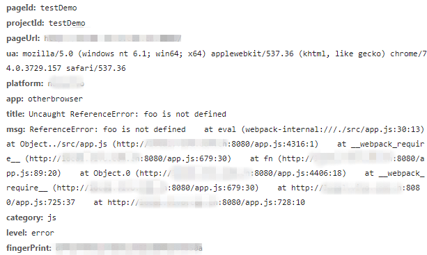
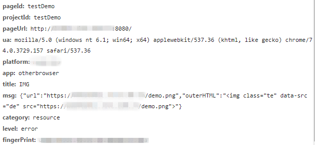
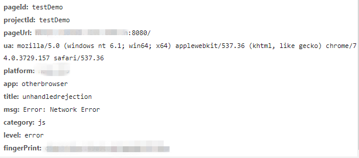
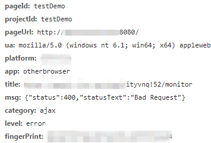

原文连接:https://www.cnblogs.com/vivotech/p/11162672.html
本文首发于 vivo互联网技术 微信公众号 https://mp.weixin.qq.com/s/E51lKQOojsvhHvACIyXwhw
作者：黄文佳
常见错误的分类
对于用户在访问页面时发生的错误，主要包括以下几个类型：
1、js运行时错误
JavaScript代码在用户浏览器中执行时，由于一些边界情况、本地环境的不可控等因素，可能会存在js运行时错误。
而依赖客户端的某些方法，由于兼容性或者网络等问题，也有概率会出现运行时错误。
e.g: 下图是当使用了未定义的变量"foo"，导致产生js运行时错误时的上报数据：

2、资源加载错误
这里的静态资源包括js、css以及image等。现在的web项目，往往依赖了大量的静态资源，而且一般也会有cdn存在。
如果某个节点出现问题导致某个静态资源无法访问，就需要能够捕获这种异常并进行上报，方便第一时间解决问题。
e.g: 下图是图片资源不存在时的上报数据：

3、未处理的promise错误
未使用catch捕获的promise错误，往往都会存在比较大的风险。而编码时有可能覆盖的不够全面，因此有必要监控未处理的promise错误并进行上报。
e.g: 下图是promise请求接口发生错误后，未进行catch时的上报数据：

4、异步请求错误（fetch与xhr）
异步错误的捕获分为两个部分：一个是传统的XMLHttpRequest，另一个是使用fetch api。
像axios和jQuery等库就是在xhr上的封装，而有些情况也可能会使用原生的fetch，因此对这两种情况都要进行捕获。
e.g: 下图是xhr请求接口返回400时捕获后的上报数据：

各个类型错误的捕获方式
1、window.onerror与window.addEventListener('error')捕获js运行时错误
使用window.onerror和window.addEventListener('error')都能捕获，但是window.onerror含有详细的error堆栈信息，存在error.stack中，所以我们选择使用onerror的方式对js运行时错误进行捕获。
window.onerror = function (msg, url, lineNo, columnNo, error) {
// 处理错误信息
}
// demo
msg: Uncaught TypeError: Uncaught ReferenceError: a is not defined
error.statck: TypeError: ReferenceError: a is not defined at http://xxxx.js:1:13
window.addEventListener('error', event => (){
// 处理错误信息
}, false);
// true代表在捕获阶段调用，false代表在冒泡阶段捕获。使用true或false都可以，默认为false

2、资源加载错误使用addEventListener去监听error事件捕获
实现原理：当一项资源（如<img>或<script>）加载失败，加载资源的元素会触发一个Event接口的error事件，并执行该元素上的onerror()处理函数。
这些error事件不会向上冒泡到window，不过能被window.addEventListener在捕获阶段捕获。
但这里需要注意，由于上面提到了addEventListener也能够捕获js错误，因此需要过滤避免重复上报，判断为资源错误的时候才进行上报。
window.addEventListener('error', event => (){
// 过滤js error
let target = event.target || event.srcElement;
let isElementTarget = target instanceof HTMLScriptElement || target instanceof HTMLLinkElement || target instanceof HTMLImageElement;
if (!isElementTarget) return false;
// 上报资源地址
let url = target.src || target.href;
console.log(url);
}, true);
3、未处理的promise错误处理方式
实现原理：当promise被reject并且错误信息没有被处理的时候，会抛出一个unhandledrejection。
这个错误不会被window.onerror以及window.addEventListener('error')捕获，但是有专门的window.addEventListener('unhandledrejection')方法进行捕获处理。
window.addEventListener('rejectionhandled', event => {
// 错误的详细信息在reason字段
// demo:settimeout error
console.log(event.reason);
});
4、fetch与xhr错误的捕获
对于fetch和xhr，我们需要通过改写它们的原生方法，在触发错误时进行自动化的捕获和上报。
改写fetch方法：
// fetch的处理
function _errorFetchInit () {
if(!window.fetch) return;
let _oldFetch = window.fetch;
window.fetch = function () {
return _oldFetch.apply(this, arguments)
.then(res => {
if (!res.ok) { // 当status不为2XX的时候，上报错误
}
return res;
})
// 当fetch方法错误时上报
.catch(error => {
// error.message,
// error.stack
// 抛出错误并且上报
throw error;
})
}
}
对于XMLHttpRequest的重写：
xhr改写
// xhr的处理
function _errorAjaxInit () {
let protocol = window.location.protocol;
if (protocol === 'file:') return;
// 处理XMLHttpRequest
if (!window.XMLHttpRequest) {
return;
}
let xmlhttp = window.XMLHttpRequest;
// 保存原生send方法
let _oldSend = xmlhttp.prototype.send;
let _handleEvent = function (event) {
try {
if (event && event.currentTarget && event.currentTarget.status !== 200) {
// event.currentTarget 即为构建的xhr实例
// event.currentTarget.response
// event.currentTarget.responseURL || event.currentTarget.ajaxUrl
// event.currentTarget.status
// event.currentTarget.statusText
});
}
} catch (e) {va
console.log('Tool\'s error: ' + e);
}
}
xmlhttp.prototype.send = function () {
this.addEventListener('error', _handleEvent); // 失败
this.addEventListener('load', _handleEvent); // 完成
this.addEventListener('abort', _handleEvent); // 取消
return _oldSend.apply(this, arguments);
}
}
关于responseURL 的说明
需要特别注意的是，当请求完全无法执行的时候，XMLHttpRequest会收到status=0 和 statusText=null的返回，此时responseURL也为空string。
另外在安卓4.4及以下版本的webview中，xhr对象也不存在responseURL属性。
因此我们需要额外的改写xhr的open方法，将传入的url记录下来，方便上报时带上。
var _oldOpen = xmlhttp.prototype.open;
// 重写open方法,记录请求的url
xmlhttp.prototype.open = function (method, url) {
_oldOpen.apply(this, arguments);
this.ajaxUrl = url;
};
其他问题
1、其他框架，例如vue项目的错误捕获
vue内部发生的错误会被Vue拦截，因此vue提供方法给我们处理vue组件内部发生的错误。
Vue.config.errorHandler = function (err, vm, info) {
2、script error的解决方式
"script error.”有时也被称为跨域错误。当网站请求并执行一个托管在第三方域名下的脚本时，就可能遇到该错误。最常见的情形是使用 CDN 托管 JS 资源。
其实这并不是一个 JavaScript Bug。出于安全考虑，浏览器会刻意隐藏其他域的 JS 文件抛出的具体错误信息，这样做可以有效避免敏感信息无意中被不受控制的第三方脚本捕获。
因此，浏览器只允许同域下的脚本捕获具体错误信息，而其他脚本只知道发生了一个错误，但无法获知错误的具体内容。
解决方案1：（推荐）
添加 crossorigin="anonymous" 属性。
<script src="http://another-domain.com/app.js" crossorigin="anonymous"></script>
此步骤的作用是告知浏览器以匿名方式获取目标脚本。这意味着请求脚本时不会向服务端发送潜在的用户身份信息（例如 Cookies、HTTP 证书等）。
添加跨域 HTTP 响应头：
Access-Control-Allow-Origin: *
或者
Access-Control-Allow-Origin: http://test.com
**注意：**大部分主流 CDN 默认添加了 Access-Control-Allow-Origin 属性。
完成上述两步之后，即可通过 window.onerror 捕获跨域脚本的报错信息。
解决方案2
难以在 HTTP 请求响应头中添加跨域属性时，还可以考虑 try catch 这个备选方案。
在如下示例 HTML 页面中加入 try catch：
<!doctype html>
<html>
<head>
<title>Test page in http://test.com</title>
</head>
<body>
<script src="http://another-domain.com/app.js"></script>
// app.js里面有一个foo方法，调用了不存在的bar方法
<script>
window.onerror = function (message, url, line, column, error) {
console.log(message, url, line, column, error);
}
try {
foo();
} catch (e) {
console.log(e);
throw e;
}
</script>
</body>
</html>
// 运行输出结果如下：
=> ReferenceError: bar is not defined
at foo (http://another-domain.com/app.js:2:3)
at http://test.com/:15:3
=> "Script error.", "", 0, 0, undefined
可见 try catch 中的 Console 语句输出了完整的信息，但 window.onerror 中只能捕获“Script error”。根据这个特点，可以在 catch 语句中手动上报捕获的异常。
总结
上述的错误捕获基本覆盖了前端监控所需的错误场景，但是第三部分指出的两个其他问题，目前解决的方式都不太完美。
对于有使用框架的项目：一是需要有额外的处理流程，比如示例中就需要单独为vue项目进行初始化；二是对于其他框架，都需要单独处理，例如react项目的话，则需要使用官方提供的componentDidCatch方法来做错误捕获。
而对于跨域js捕获的问题：我们并不能保证所有的跨域静态资源都添加跨域 HTTP 响应头；而通过第二种包裹try-catch的方式进行上报，则需要考虑的场景繁多并且无法保证没有遗漏。
虽然存在这两点不足，但前端错误捕获这部分还是和项目的使用场景密切相关的。我们可以在了解这些方式以后，选择最适合自己项目的方案，为自己的监控工具服务。
—— —— 参考文档 —— ——
1.Using XMLHttpRequest：
https://developer.mozilla.org/en-US/docs/Web/API/XMLHttpRequest/Using_XMLHttpRequest
2.script error 产生的原因和解决办法：
https://www.alibabacloud.com/help/zh/faq-detail/88579.htm
3.JavaScript执行错误：
https://docs.fundebug.com/notifier/javascript/type/javascript.html
4.betterjs的script error：
https://github.com/BetterJS/badjs-report/issues/3
5.Vuejs的errorHandler：
https://cn.vuejs.org/v2/api/index.html#errorHandler
6.React的componentDidCatch：
https://reactjs.org/blog/2017/07/26/error-handling-in-react-16.html
更多内容敬请关注 vivo 互联网技术 微信公众号
注：转载文章请先与微信号：labs2020 联系。